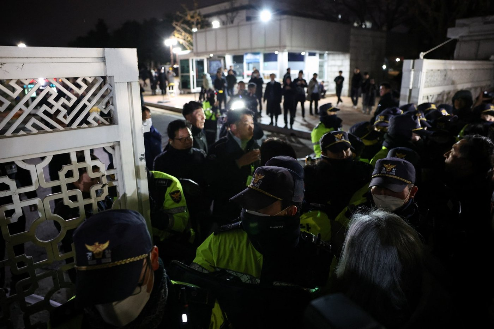

Cómo la polarización llegó a un autogolpeGolpe de Estado dado desde el propio gobierno., y cómo la institucionalidad lo frenó
Toca cada acto para expandirlo.
En una fraseUna democracia donde los rivales dejaron de verse como legítimos.
El presidencialismo imperialPresidencia con muchas atribuciones y pocos contrapesos.. El diseño de 1987 concentró amplias atribuciones en la Presidencia (mandato único de 5 años), incluido el veto legislativo y el nombramiento de altos cargos ministeriales y judiciales sin necesidad de un consenso parlamentario amplio.
La "política de venganza". Tras la destitución de Park Geun-hye en 2017 y la llegada de Moon Jae-in, el uso de investigaciones judiciales para procesar y encarcelar a figuras de la administración saliente instauró un clima de revancha en el que las élites dejaron de verse como competidores legítimos.
Polarización. Estudios internacionales ubicaron a Corea del Sur a la cabeza de la polarización política global: más de 90% de la población percibía conflictos agudos entre simpatizantes del Partido del Poder Popular (PPPPartido del Poder Popular, conservador., conservador) y el Partido Demócrata (DPKPartido Demócrata de Corea, progresista., progresista), alimentados por comunidades de "política de fandom" y propaganda en redes.
Cuando los rivales dejan de ser legítimos, cualquier institución se vuelve un arma.
En una fraseUn Ejecutivo sin mayoría contra un Legislativo hostil.
Presidente
- Yoon Suk-yeol ganó en 2022 por 0,73%
- 33 vetos contra proyectos opositores
Parlamento
- DPK con 175 de 300 escaños desde abril de 2024
- 29 mociones de censura e impeachment
En las elecciones presidenciales de marzo de 2022 el exfiscal general Yoon Suk-yeol (PPP) derrotó a Lee Jae-myung (DPK) por un margen mínimo histórico de 0,73%. Asumió sin experiencia política previa y sin mayoría parlamentaria, frente a un Legislativo dominado por el DPK.
La relación entre ambos poderes colapsó en una guerra institucional: la oposición aprobó 29 mociones de censura e impeachmentJuicio político para destituir a un alto cargo. contra fiscales y ministros, y Yoon vetó 33 veces proyectos opositores, con el presupuesto y la agenda pública paralizados. En abril de 2024, el DPK consolidó su mayoría absoluta (175 de 300 escaños) y dejó a Yoon acorralado, sin poder promulgar reformas.
Un Ejecutivo sin mayoría y un Legislativo hostil: nadie podía ganar ni dejar que el otro gobernara.
En una fraseEl autogolpe duró seis horas, pero el proceso llegó hasta cadena perpetua.
Yoon decreta la ley marcial.
La Asamblea la anula por 190 a 0.
El Tribunal Constitucional confirma su destitución.
Condena a cadena perpetua.

El momento de quiebre ocurrió en la noche del 3 de diciembre de 2024, cuando el presidente Yoon declaró la ley marcial en lo que fue un autogolpe de Estado.
3 dic 2024El decreto
Yoon acusó en televisión a la mayoría parlamentaria de "dictadura legislativa" y de "fuerzas antiestatales aliadas con el comunismo norcoreano", y ordenó suspender la Asamblea, prohibir partidos, controlar los medios y arrestar a líderes opositores y de su propio partido, entre ellos Lee Jae-myung y Han Dong-hoon.
4 dicLa anulación
Legisladores opositores y oficialistas entraron al recinto, escalando cercas y evadiendo comandos militares, y votaron 190 a 0 para anular la ley marcial. Yoon levantó el decreto seis horas después de emitirlo.
14 dicLa destitución
La Asamblea aprobó el impeachment.
Ene - abr 2025Arresto y fallo
Yoon fue arrestado e imputado por insurrección. El 4 de abril el Tribunal Constitucional ratificó por unanimidad su destitución definitiva.
Feb 2026La condena
Yoon fue condenado a cadena perpetua por liderar la rebelión militar.
El autogolpe duró seis horas porque el Parlamento no se dejó disolver.
En una fraseLa respuesta fue arreglar la regla, no solo castigar a quien la usó.
Elección anticipada
Gana Lee Jae-myung (DPK).
Condenas al gabinete
Kim Yong-hyun y Han Duck-soo reciben severas penas.
Enmienda
Prohíbe que las fuerzas armadas bloqueen el ingreso de legisladores.
El 3 de junio de 2025 se celebró la elección presidencial extraordinaria, que ganó el progresista Lee Jae-myung (DPK). Su administración se presentó como la "Revolución de la LuzNombre con que se presentó la administración de Lee Jae-myung." (Light Revolution).
Los tribunales condenaron a severas penas de prisión al exministro de Defensa Kim Yong-hyun y al ex primer ministro Han Duck-soo por su participación en la conspiración militar.
En julio de 2025 la Asamblea enmendó la ley marcial para prohibir explícitamente que las fuerzas armadas bloqueen el ingreso de legisladores al Parlamento o interfieran en sus labores. Ganó fuerza además el consenso político para reformar la Constitución de 1987, para atenuar los poderes del presidente e introducir un modelo de 4 años con reelección o esquemas semipresidenciales.
La respuesta fue arreglar la regla que permitió el abuso, no solo castigar a quien lo cometió.
En una fraseDos lecturas del autogolpe.
Yul Sohn y Won-Taek Kang
- Consecuencia de décadas de normas rotas por ambos partidos
- "El partido primero, la democracia después"
Otros investigadores
- Reacción eficaz de instituciones y ciudadanía
- La cultura democrática de 1987 está arraigada
Resiliencia democrática. El fracaso del autogolpe evidenció que la sociedad civil y las instituciones (la Asamblea, el Tribunal Constitucional, la Comisión Nacional Electoral) tienen madurez para neutralizar un intento dictatorial en pocas horas.
Un bloque conservador roto. La tentativa de Yoon sumió al movimiento conservador en una profunda crisis de identidad y fragmentación, y debilitó su hegemonía tradicional sobre la seguridad nacional y la economía.
Gobernanza pragmática. El gobierno de Lee Jae-myung adoptó una "diplomacia pragmática" y reformas de equidad socioeconómica para intentar desarmar la polarización afectiva que llevó al país al borde del colapso.
Dos lecturas se enfrentan. Yul Sohn y Won-Taek Kang ven en el autogolpe la consecuencia de décadas de normas rotas por ambos partidos ("el partido primero, la democracia después"). Otros investigadores destacan la eficacia de la reacción de las instituciones y de la ciudadanía como prueba de que la cultura democrática de 1987 está arraigada.
Quién quería qué, y con qué poder
Yoon Suk-yeol y la facción Chungam
Núcleo conservador que intentó el autogolpe del 3 de diciembre de 2024 para disolver a la oposición. Sufrió juicio político, destitución y condena a cadena perpetua.
Lee Jae-myung y el Partido Demócrata
Encabezaron la resistencia parlamentaria contra la ley marcial, ganaron la elección de junio de 2025 y asumieron con una agenda de reformas democráticas y diplomacia pragmática.
Woo Won-shik y la Asamblea Nacional
Defendieron la soberanía popular. Convocaron al pleno de emergencia que anuló la ley marcial en tiempo récord.
El Tribunal Constitucional
Órgano de control judicial definitivo: ratificó por unanimidad la destitución de Yoon en abril de 2025.
Dos maneras de sostener el orden político
China
El régimen unipartidista mantiene la estabilidad con la centralización autocrática del Partido Comunista. Corea del Sur superó su crisis preservando el pluralismo político, la independencia judicial y la alternancia electoral.
Japón
Frente al dominio estable del PLD, la política surcoreana es mucho más polarizada y volátil, pero tiene mecanismos de control constitucional e impeachment mucho más activos y punitivos contra abusos del Ejecutivo.
Fuentes afines a este cuaderno, asignadas por tema: de lo más sólido a lo más contextual. Curado por el equipo de Club Kongzhi.
- Essentialist Democracy and Political Polarization: Korea's Experience from a Comparative PerspectiveAcadémico
- Exploring Worldwide Democratic Innovations: A case study of South KoreaEuropean Partnership for Democracy / Institucional
- How Polarization Undermines Democracy in South KoreaCouncil on Foreign Relations / Institucional
- Reforming South Korea's "Imperial Presidency"Institute for Security & Development Policy / Institucional
- South Korea Reins In Its Powerful ProsecutorsU.S.-Asia Law Institute / Institucional
- The 2022 South Korean Presidential Election and the Gender Divide among the YouthPacific Affairs, UBC / Académico